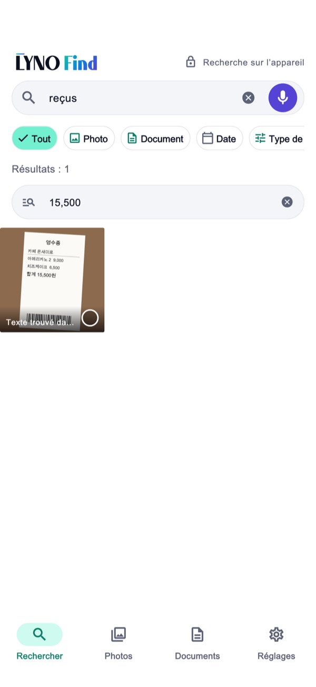

Rechercher plus précisément
1. Tapez seulement ce que vous cherchez
Seulement les mots voulus, c’est le plus précis. LYNO Find cherche à la fois dans ce que montrent les photos, le texte sur les photos et le texte des documents. Les vidéos ne sont pas encore recherchées.
Exemples: chat reçu mot de passe wifi
2. Cherchez par nom de dossier
Tapez le nom d’un dossier intelligent activé : ses photos s’affichent sous les résultats. Tapez-en deux ou trois séparés par des espaces pour ne voir que les photos présentes dans tous.
Exemples: chien plage chien
3. Séparez plusieurs mots par des points · Recherche multiple
Des mots séparés par des points (.) ou des virgules (,) font une recherche multiple. Les photos avec tous les mots viennent d’abord, puis celles avec une partie. En ouvrant une photo en grand, vous voyez combien de fois chaque mot a été trouvé.
Avec des espaces seulement, les mots sont cherchés comme une phrase, pratique pour une formule dans un document.
Au-dessus des résultats, vous voyez combien de photos ont tous les mots et combien en a chacun. Si une recherche avec des espaces trouve peu de photos, le bouton « Chercher séparément » apparaît.
D'abord des espaces, des points pour plusieurs choses. Des mots séparés par des espaces (Japon plage) ne gardent que les photos qui correspondent à tout : recherche étroite et précise. Des mots séparés par des points (chien. chat. mer) sont cherchés chacun de leur côté et affichés ensemble, ceux qui ont tous les mots d'abord. Si la recherche avec espaces trouve peu, touchez « Chercher séparément ».
Exemples: chien. chat. plage
4. Dites-le simplement · Recherche vocale
Touchez le micro et parlez. LYNO Find garde les mots utiles et montre d’abord les photos où ils apparaissent ensemble.
iPhone · SiriSans ouvrir l'app, dites à Siri « Trouve-le dans LYNO Find », puis répondez ce qu'il faut chercher, par exemple « photos de chien ». Seules les photos s'affichent. « Documents de contrat » montre les documents, et « chien » seul, les deux.
Trouve-le dans LYNO Find Recherche-le dans LYNO Find Recherche avec LYNO Find Trouve des documents dans LYNO Find
Maintenez l'icône de l'app et touchez « Recherche vocale », ou touchez le micro du widget, pour chercher à la voix tout de suite.
Exemples: trouve les photos de mon chat à la plage
5. Ajoutez le lieu ou la date
Tapez ce que vous cherchez avec le lieu de la prise de vue : seules les photos prises là-bas sont parcourues, grâce à la position enregistrée dans chaque photo. Cela marche aussi avec la recherche vocale. Vous pouvez aussi ajouter quand.
Exemples: Japon plage Paris selfie plage été dernier reçu octobre 2026
6. Cherchez encore dans les résultats
Tapez un autre mot dans « Rechercher dans ces résultats » au-dessus des résultats pour chercher seulement parmi eux. Par exemple : cherchez plage, puis chat dedans.
